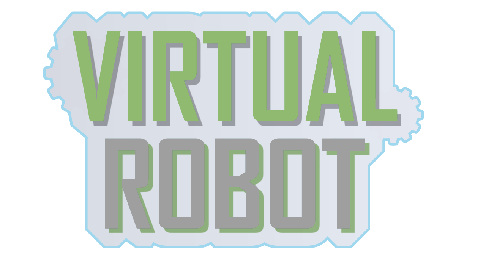

---
# Feel free to add content and custom Front Matter to this file.
# To modify the layout, see https://jekyllrb.com/docs/themes/#overriding-theme-defaults
layout: page
---

「VirtualRobot」は自分でロボットを設計しプログラムを書くことでミッションを攻略するゲームです。
ミッションをクリアするごとに使えるパーツが増えていき、それぞれ目的の違う12+2のミッションをクリアすることが目標で、制限のうちで攻略すると追加でスターが集められるやりこみ要素もあります。 ダウンロード Windows